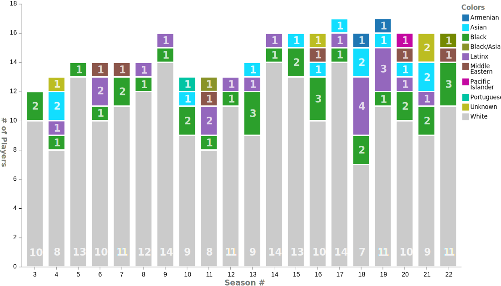
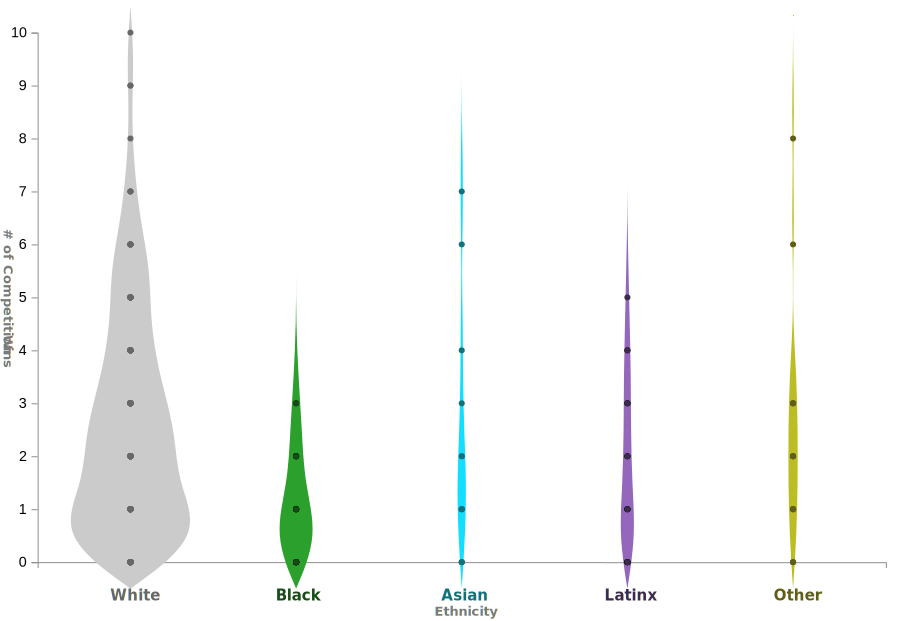
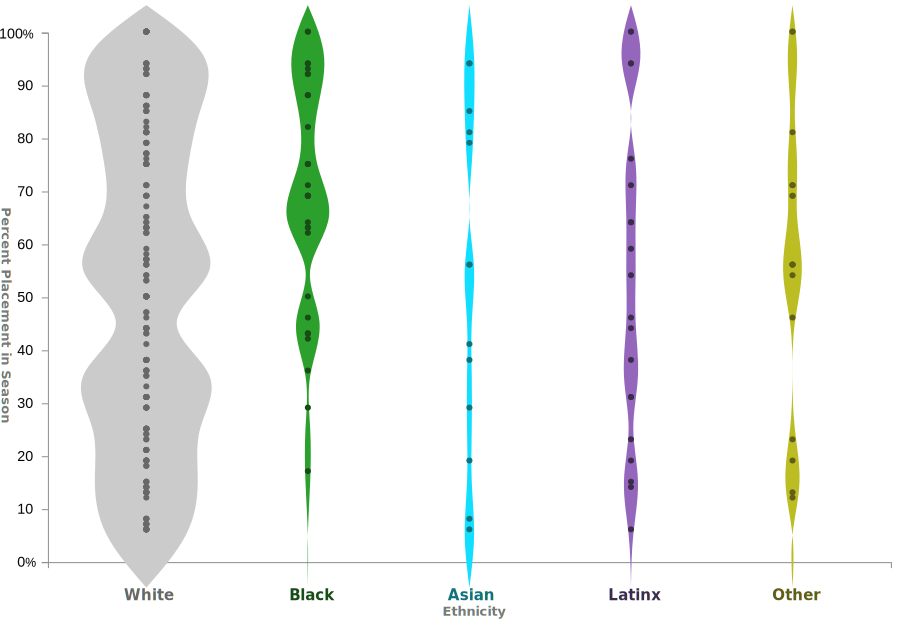
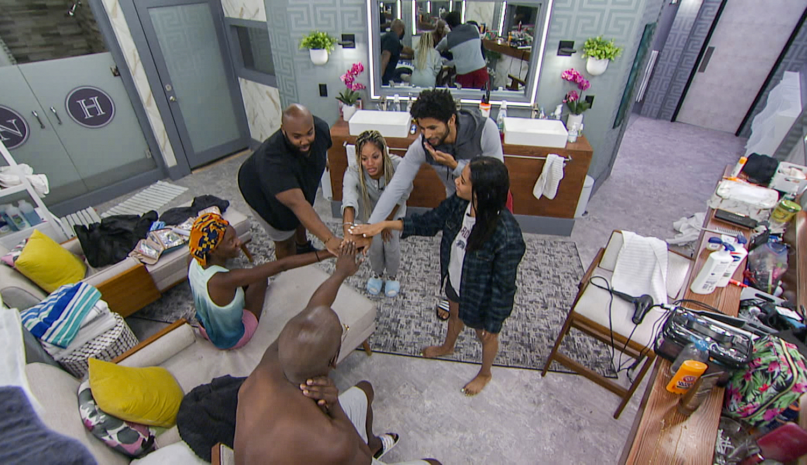

Have You Heard of Big Brother?
From a young age, I grew up watching Big Brother, a CBS reality tv competition in which a house of 12-17 players must strategize and compete to be the last "houseguest" remaining. The show is like the more widely known Survivor, but instead takes place in a house where players are monitored 24/7 by the live feed cameras which both producers and fans watch.
The strategy involves:
- Creating alliances to be in the house majority
- Persuading/lying to other players to keep you safe
- Winning competitions for safety or power
- Generally being well liked by other players
Each Week of Big Brother Consists of a...
Head of Household
COMPETITION
Winner nominates two houseguests for elimination and controls the house for the week. Winner is not eligible to compete in the HOH competition next week.
Power of Veto
COMPETITION
Winner can remove one nominee, who is replaced by an additional nomination of the HOH's choosing. Winner can also choose to leave nominations the same.
Live Eviction
CEREMONY
Houseguests who are not nominated for elimination vote out one of the two nominees. HOH can only vote in the event of a tie.
The Big Brother Minority Disadvantage
Throughout its past seasons, it has been very clear that Big Brother advantages white, male players because of the lack of diversity in its casting. White players by far make up the majority of the cast each season, with sparing LGBTQIA+, Latinx, Black, and Asian representation. Year after year, white men seem to create majority alliances that run the vote from week to week. Often, their targets tend to be the minority players and women that are excluded from their alliances. These alliances have increased odds of winning competitions, which often suit male athleticism, and thus hold the power of deciding who is eliminated.
Basically, the game is rigged against non-white players.
In this clip below, two Big Brother 21 players discuss the disadvantage non-white players are at due to white-washed casting.
Introducing the Dataset
The dataset, which I retrieved from GitHub user @vdixon3, contains information about all the contestants that the show has had from seasons 1-22. It contains 355 observations, each representing an individual past contestant. The 50 variable columns begin by describing each contestant’s biography (gender identity, sexual orientation, ethnicity, disability status, hometown). Then, it shows where they placed in the season and their total number of competition wins.
The dataset, collected through records of seasons 1-22, might offer quantitative evidence of this ethnic disadvantage...
Analyzing for Ethnic Disadvantage
My analysis process was fairly straight-forward, but did involve some editing of the Github dataset.
During the analysis of the dataset, I aimed to answer:
- What has been the evolution in casting demographics throughout seasons 3-22? Has diverse representation fluctuated?
- How did the performance of minority players differ in terms of competition wins and placement across all seasons?
Due to the large amount of data before me, I needed to scope my study to gain valuable insights into the trends in player performance. This began by first eliminating the data on seasons 1-2, which took place under a different format than season 3 and on. I also removed players from celebrity and non-cannon seasons that the dataset included.
I noticed that there were two columns representing ethnicity, original_race_ethnicity and race_ethnicity. In order to streamline my analysis, I removed race-ethnicity because it had superfluous specificity about biracial players that was not especially necessary to answering my analysis questions.
Black/Asian, Middle Eastern, Pacific Islander, Portuguese, Unknown, Armenian players are summarized under the combined 'Other' category in the distribution visualizations. To reflect this decision in the RAWGraphs.io graphs, I made a separate version of the dataset, and used the find/replace feature in Excel to replace these ethnicity instances in the race-ethnicity variable column with the blanket term 'Other'. This allowed me to visualize this newly created ethnicity category.
In using RAWGraphs.io, I needed to create a second dataset based on the original to relay the casting demographics to the web application for the casting breakdown visualization. Instead of the row observations being players, the observations were seasons 3-22 so I could summarize the ethnic breakdown of each season through column variables representing each ethnicity of player the show has seen. For the player performance by ethnicity visualizations, I was able to utilize the pre-existing total_competition_wins and placement_rank_percent variables.
Visualizing Ethnic Disadvantage
To answer the questions outlined in the analysis phase of my investigation, I created visualizations that illuminate the casting disparities within Big Brother and the effects it has on diverse players' ability to succeed.
Ethnic Distribution of Big Brother Seasons 3-22 Cast
Using a stacked bar graph, we see the evolution of Big Brother's casting demographics over time in a single visualization.
With color representing ethnicity, this visualization shows a consistent lack of diverse representation. This is quickly seen in the sparse color that is shown for each season in comparison to the light gray, representing white players.
In season 9, even as casting increased from 14 to 16 players, only two diverse players were cast. Certain seasons saw small upticks in Black and Latinx representation to 3-4 players. Asian players consistently were either not cast or were alone in their season. Later seasons saw a minor increase in diversity in terms of Asian players, but just marginally. Smaller ethnic groups like Armenian and Middle Eastern players were not commonly cast throughout all seasons.
Total Competition Wins Distribution by Ethnicity
In this violin plot, we see the distribution of wins, comprising Power of Veto and Head of Household competitions, are unequally distributed to white players. This is understood almost instantly because of the y-axis range that the white players violin plot (in gray) takes up in comparison to the colored plots, comprising diverse ethnicities. Black/Asian, Middle Eastern, Pacific Islander, Portuguese, Unknown, and Armenian players are combined under the 'Other' category to equalize the number of players represented in non-white violin plots.
White players have been able to achieve all values of total wins, with majority of white players averaging around 1 win and a smaller percentage accumulating 10 wins. In comparison, Black players have accumulated max 3 wins, Asian players 7 wins, Latinx players 5 wins, and 'Other' players 8 wins. In addition, there is a large difference in thicknesses between white and non-white players, illustrating the sheer difference in the amount of white vs non-white players cast.
The thickness of non-white violin plots has decreased or disappeared by around 4 competition wins. White players have thicker distribution until around 7 competition wins.
The visualization makes it very clear that white players have consistently held the power throughout the show's history, benefiting from a lack of diverse casting. With worse odds of securing power through competitions due to exclusion from main alliances, diverse players are not able to keep diverse allies safe from nominations and thus are pitted against each other to survive. As diverse players tend to be voted out early, they have less opportunities to win competitions and hold a fewer number of wins in this visualization.
Violin plots show the distribution of total wins accumulated by players, divided by ethnicity. The dots within the plots represent specific total wins that a player has accumulated. The number of competitions held each season has changed so this must be taken into account when considering how many wins a player could have potentially accumulated.
Percent Placement Distribution by Ethnicity
In this second violin plot, we see the distribution of percent final placement (with 6-8% representing winning, and 100% representing being voted out first) across the 5 ethnicity groupings. Black/Asian, Middle Eastern, Pacific Islander, Portuguese, Unknown, and Armenian players are combined under the 'Other' category to equalize the number of players represented in non-white violin plots. This plot communicates the trends of what placement a specific ethnicity of player placed at throughout seasons 3-22 succinctly. It allows for quick comparison of how far specific ethnicities are making it in the game on average.
A sizeable portion of white players have been able to survive until the end of the game, based on the thickness of their violin plot in the 45-0% range. Black players maxed out in terms of percent placement at 15% and 'Other' at around 12%.
Black players are primarily distributed around the 100-55% range, meaning they are disproportionally voted out before the halfway mark of the game.
Asian and Latinx players have won the game in the past so they are represented at the winning 6-8% range. Asian and Latinx players have a more evened out distribution across the 100-0% range, which means they are less likely to be targeted early in comparison to Black players. Latinx players do have a bit of a thicker distribution at the 100-85% range, meaning that a sizeable portion of Latinx players are voted out extremely early in the game. Asian players have a proportionally less thick distribution between the 100-70% range, meaning they are voted out early to a lesser extent than Latinx players.
Seeing diverse players, especially those who are African American, targeted early and excluded from main alliances is highly disturbing. It is time the show reconciled with the disadvantage that minority players experience as a result of CBS' casting.
Violin plots show the distribution of player placement, divided by ethnicity. The dots within the plots represent specific placements that a player has received. Cast sizes have changed each season so the use of percent placement accounts for this variation.
Thankfully, Things Are Beginning to Change
In the history of the game, only 3 of the 22 winners of Big Brother have been minorities. In season 4, Jun Song was the first Asian winner. In season 19, Josh Martinez was the first Latinx winner. In season 20, Kaycee Clark became the first Filipina winner.
Now in season 23, CBS finally has begun to change their casting procedures. This past season included 6 Black player that were able to form an alliance, make it to the final-6, and crown the first African American winner of Big Brother. This was a historic milestone for reality TV, as well as a clear indicator that the ethnic disadvantage, caused by casting, was the root cause of the show's white-washed array of winners.
